Welcome to Personal Portfolio Webpage of web developer marinmar
About me
My name is Marina, I am frontend-web-developer.
Used technologies
HTML
CSS
PUG
SCSS/SASS
JS
NPM
GULP
GITHUB
PHOTOSHOP
FIGMA
Pixel Perfect
Cross-browser
Some works for your attentionSite fo Jewelry Store
Created in React using Bootstrap components. Made according to its own mockup
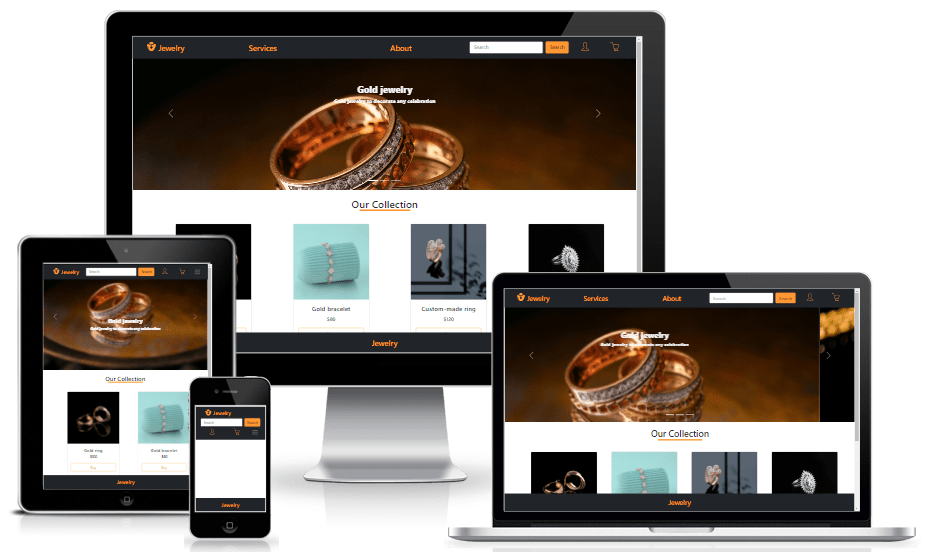Tribute Page
Tribute Page, first project on course from www.freecodecamp.org "Responsive Web Design". It was necessary to create an intro-page, I've decided to dedicate it for my favourite music group "FFDP".
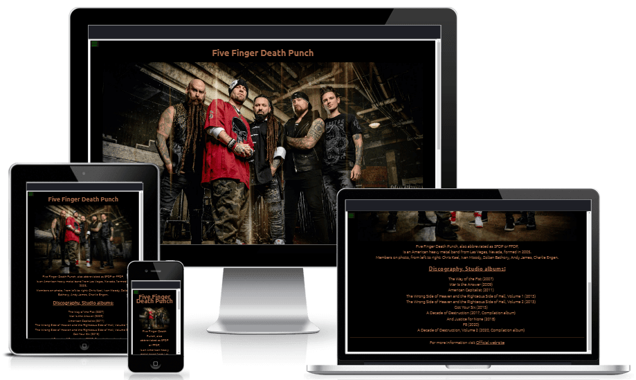Survey Form
Survey Form, second project on course from www.freecodecamp.org "Responsive Web Design". It was necessary to create Survey Form, I've decided to do concept of a newsletter signup form for a website, such as a music group.
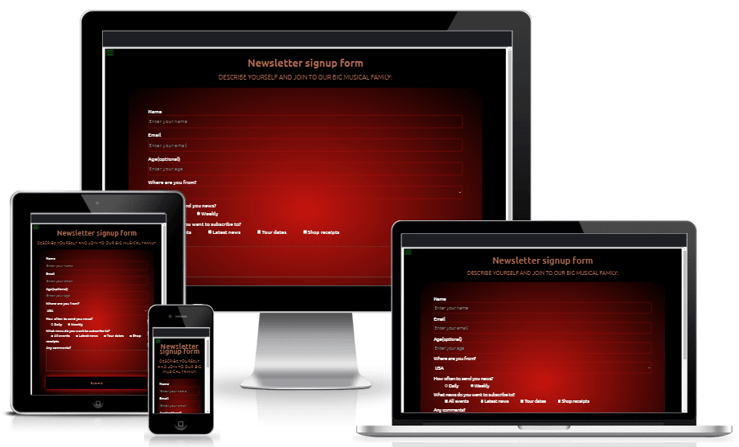Product Landing Page
Product Landing Page, third project on course from www.freecodecamp.org "Responsive Web Design". It was necessary to create Product Landing Page, I've decided to do the agency's page for choosing homes in resort areas. This is a landing page with video and cards of the advantages of houses, and a feedback form. (All possible matches are random, the content is fictional.)
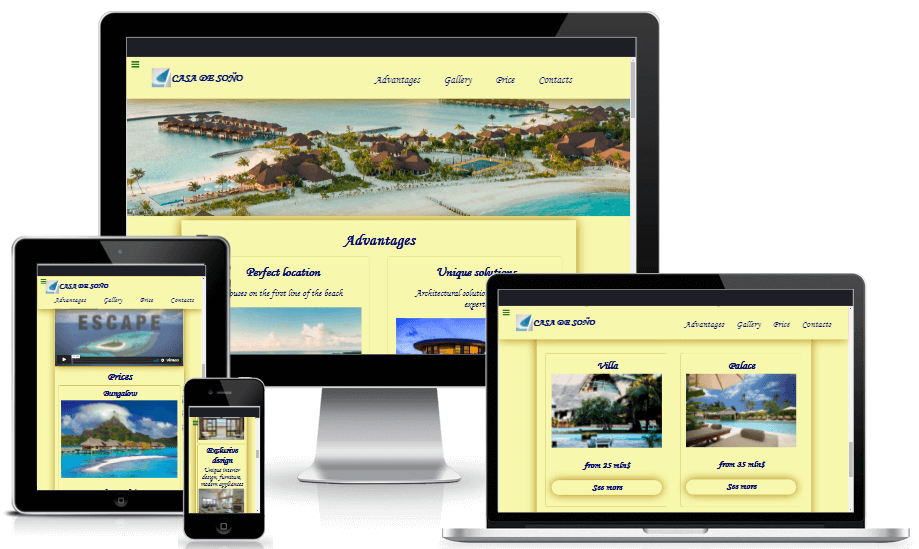Technical Documentation Page
Technical Documentation Page, fourth project on course from www.freecodecamp.org "Responsive Web Design". It was necessary to create Technical Documentation Page, I've decided to do a description of AJAX. This is an interpretation of what the documentation might looks like. Information from MDN Web Docs (Web Technology for Developers - Developer Guides - Ajax).
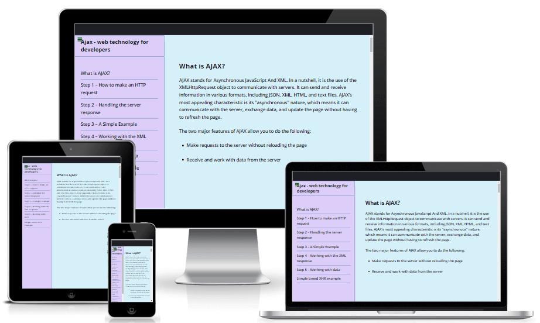Landing page for web-photographer
Landing page (portfolio) for web-photographer. Template was from psd.
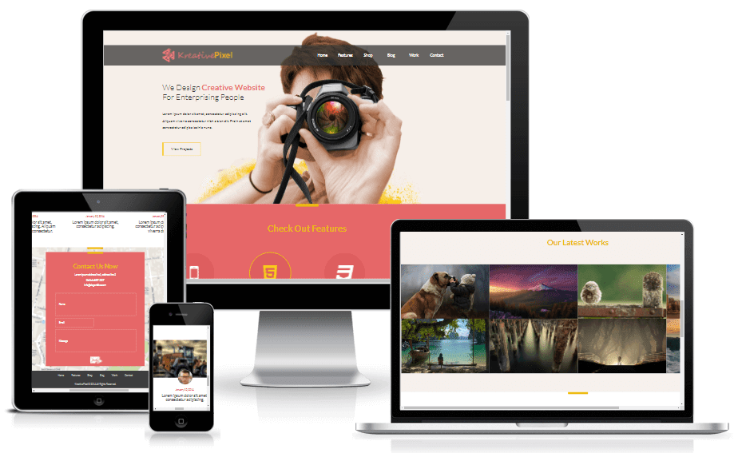Landing page for Music Festival
Landing page for Music Festival. Template was from psd.
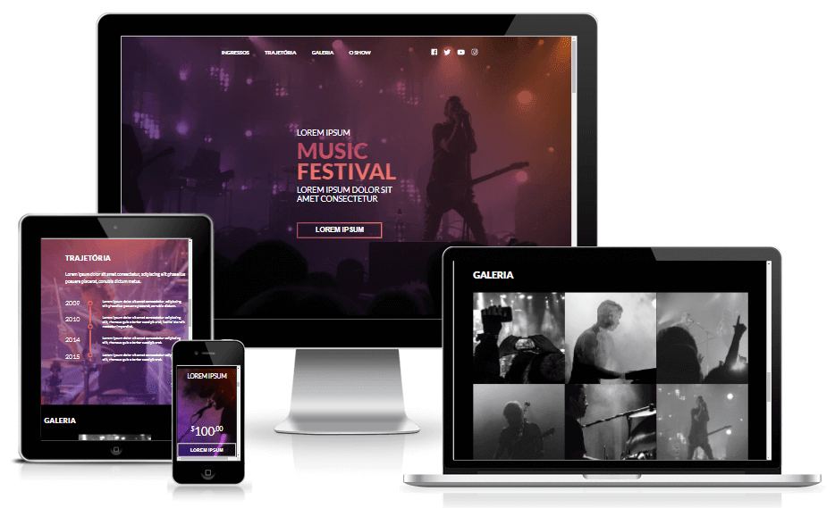Landing page for Interior Design Studio
Landing page for Interior Design Studio from Maraphone "Zaverstayou 2.0" of HTML-Academy, template from Figma.
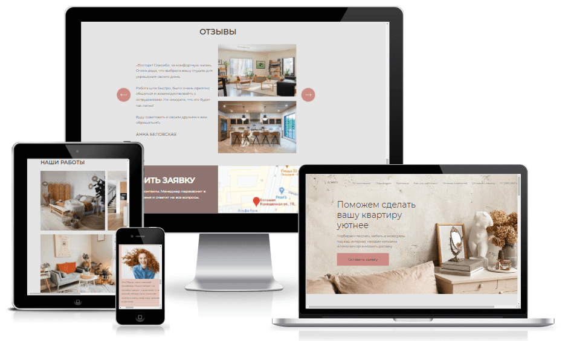Landing page for Studio of Yoga
Landing page for Studio of Yoga, template was from PSD.
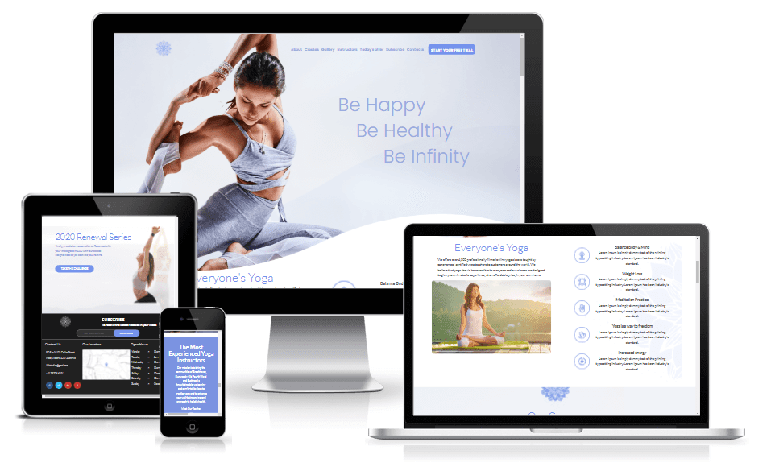
Site fo Jewelry Store
Created in React using Bootstrap components. Made according to its own mockup
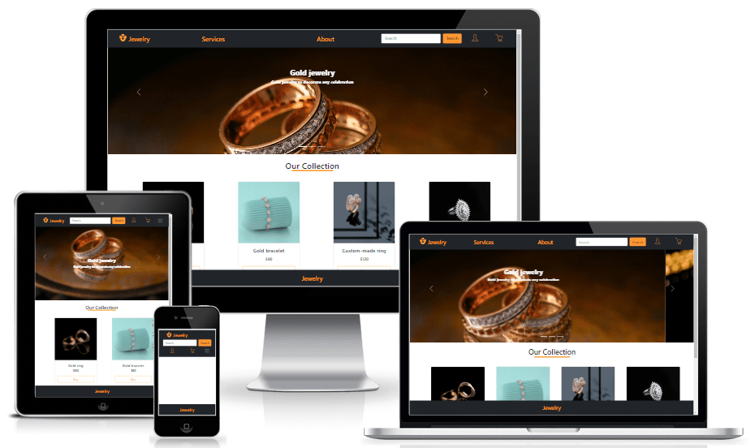Tribute Page
Tribute Page, first project on course from www.freecodecamp.org "Responsive Web Design". It was necessary to create an intro-page, I've decided to dedicate it for my favourite music group "FFDP".
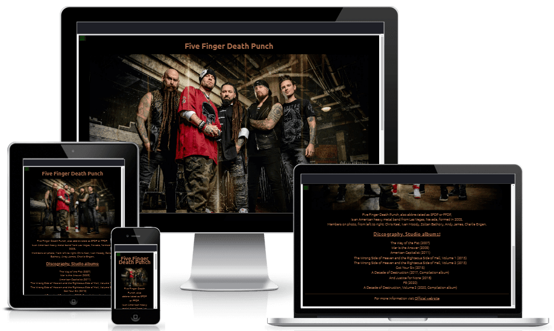Survey Form
Survey Form, second project on course from www.freecodecamp.org "Responsive Web Design". It was necessary to create Survey Form, I've decided to do concept of a newsletter signup form for a website, such as a music group.
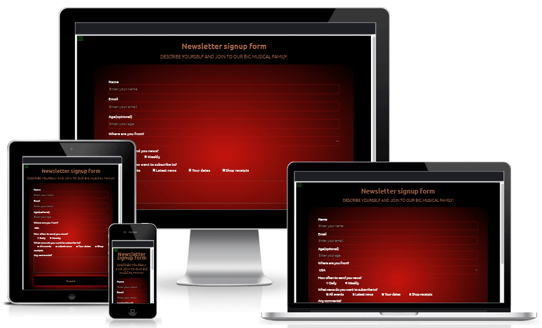Product Landing Page
Product Landing Page, third project on course from www.freecodecamp.org "Responsive Web Design". It was necessary to create Product Landing Page, I've decided to do the agency's page for choosing homes in resort areas. This is a landing page with video and cards of the advantages of houses, and a feedback form. (All possible matches are random, the content is fictional.)
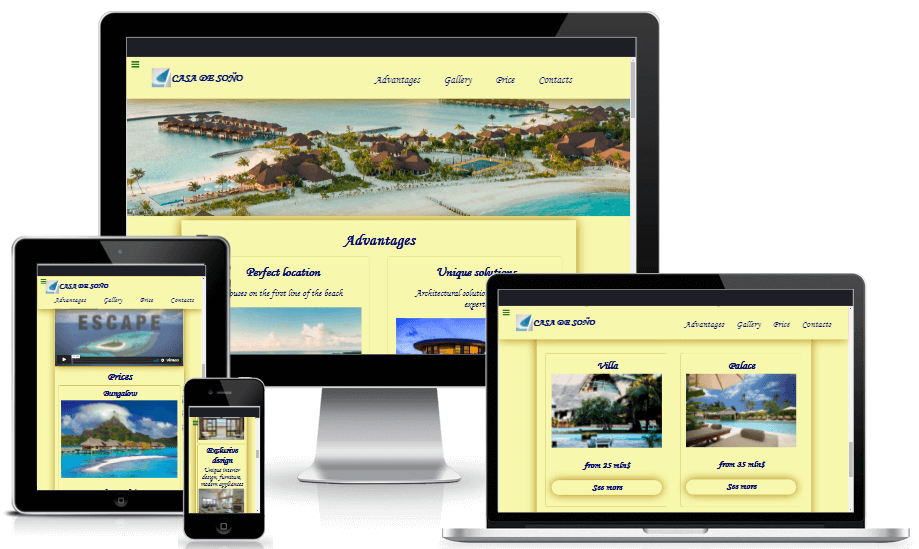Technical Documentation Page
Technical Documentation Page, fourth project on course from www.freecodecamp.org "Responsive Web Design". It was necessary to create Technical Documentation Page, I've decided to do a description of AJAX. This is an interpretation of what the documentation might looks like. Information from MDN Web Docs (Web Technology for Developers - Developer Guides - Ajax).
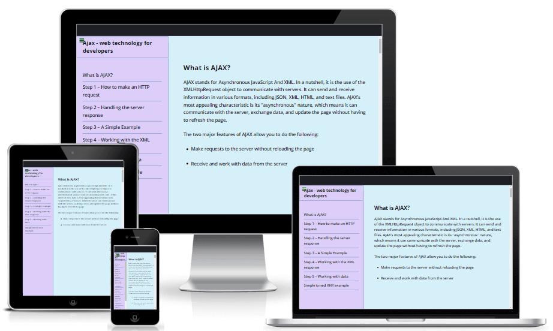Landing page for web-photographer
Landing page (portfolio) for web-photographer. Template was from psd.
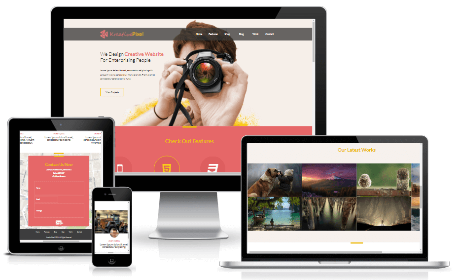Landing page for Music Festival
Landing page for Music Festival. Template was from psd.
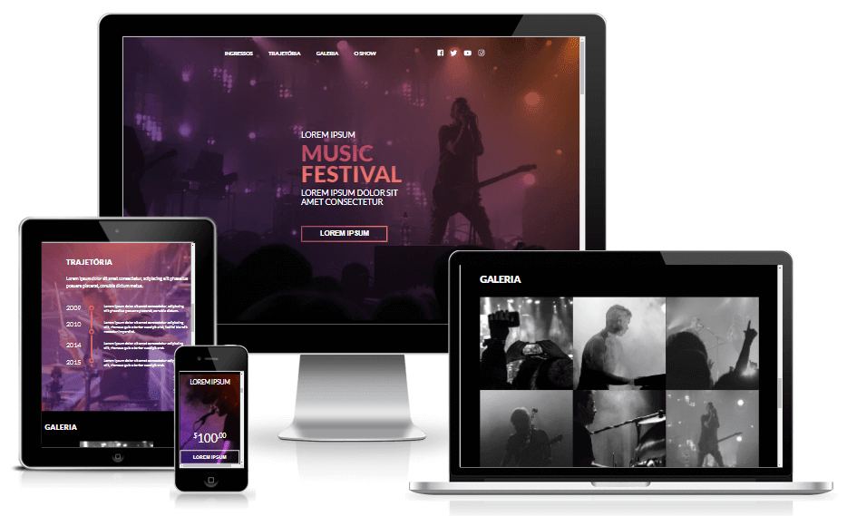Landing page for Interior Design Studio
Landing page for Interior Design Studio from Maraphone "Zaverstayou 2.0" of HTML-Academy, template from Figma.
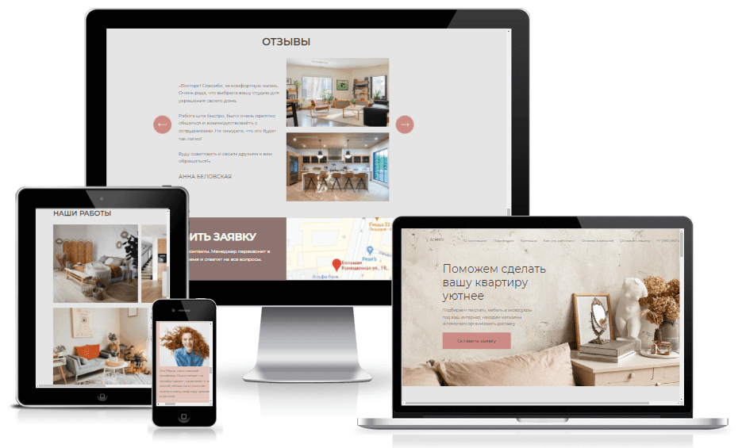Landing page for Studio of Yoga
Landing page for Studio of Yoga, template was from PSD.
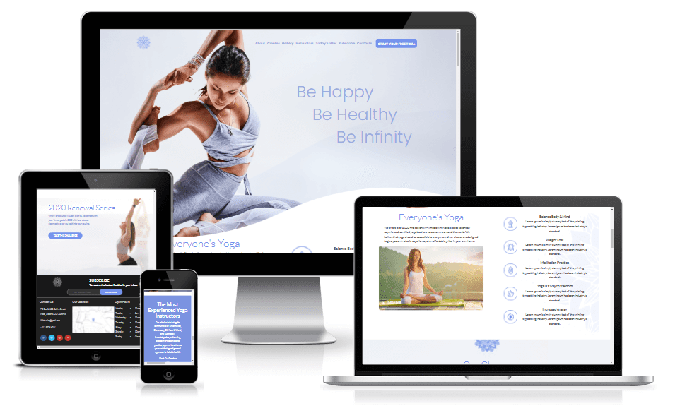